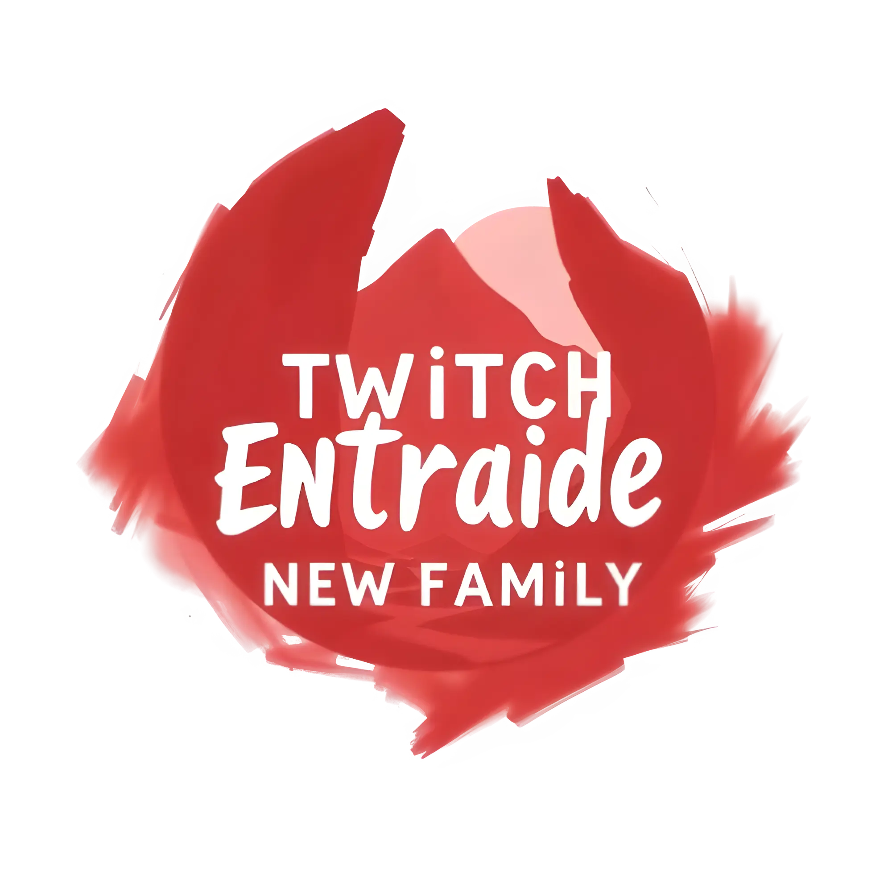

🎯 Progression
Mentorat, feedbacks, ateliers et entraide structurée.

La communauté francophone d’entraide entre streamers & viewers ✨
Bienveillance, entraide, visibilité — chaque semaine, tous ensemble.
Mentorat, feedbacks, ateliers et entraide structurée.
Ambiance safe, modération formée, zéro drama sur la page.
Raids, relais, mise en avant des créateurs motivés.